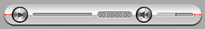
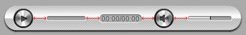

“Audio Player ” Documentation by Sana Sandeep - v1.0
“Audio Player”
If you have any questions that are beyond the scope of this help file, please feel free to email via our email. Thanks so much!
Table of Contents
- Important notes read this before anything else.
- Preparing the audio files.
- Preparing SHOUTCAST.
- How to install Audio Player into your html page.
- Constructor parameters.
- Encrypt source path.
- API.
- Sources and Credits
A) Important notes make sure you read this! - top
Please note that the Audio Player installation and configuration is not complicated but because it has a lot of customizable settings it might seem complicated, please go through the entire documentation before trying to install it into your own page. Basically what it must be done is to copy some html code from the examples we provided and paste it into your own html page and of course add your own audio file.
The server is character case sensitive so make sure that the Audio Player settings are identical to those from the provided examples.
When testing local on IE7/IE8 it will not work because the flash (.swf) file is trying to comunicate with the browser and this is not allowed, of course it will work fine when tested online.
B) Preparing the audio files. - top
This audio player requires only .mp3, there is no need to suply an .ogg or other type of audio source.
C) Preparing SHOUTCAST. - top
In order to stream shoutcast instead on adding the source mp3 file path add the shoutcast server address and at the end of it ;.mp3 , like this : http://95.141.24.224:80/;.mp3. Adding the ;.mp3 at the end of the address will force the server to serve the mp3 stream instead of the http web page. Please note that this player has support only for mp3 stream and it will not work correctly with other formats like .acc or .ogg. The good news is that the player will play the stream on all browser no matter which operating system is used, this applies to both mobile and desktop.
D) How to install Audio Player into your html page. - top
This is a small tutorial about how to install the Audio Player into your page. Audio Player can be e embedded into a html page inside a div of your choosing, the Audio Player will adapt its width based on the maxWidth property specified in the constructor, the height is set based on the skin height, if the page is resized and the parent div width is smaller then the maxWidth property the Audio Player will adapt its size accordingly.
In the download files inside the start folder there are html files starting with the label "skin", each of this examples have exactly the same structure with different constructor settings you can use one of them to copy and paste the needed html code based on skin that you need, I will use the skin-minimal-white.html as an example for this tutorial.
The skin is created using javascript and .png images, if you want a custom skin please contact us. If you want to create a skin of your own modify the ones we already provided.
- Copy and paste the content folder and the java folder into the same folder with your .html file, inside the content folder there are other folders which are self explanatory. Keep only the skin folders that you need to save space on the server.
- Open skin-minimal-white.html with a text editor.
- The javascript file must be imported, in the head section of your html file add the code from the below image.
You need a div into which the Audio Player will be added as a child, so create a div and set an id for it, the id is important because it is passed in the Audio Player constructor, make sure it is unique. The Audio Player is responsive as follows, the width will adapt based on the maxWidth property specified in the constructor, the height is set based on the skin height, if the page is resized and the parent div width is smaller then the maxWidth property the Audio Player will adapt its size accordingly.
Next step is to set the audio path, to do this in the contructor set the sourcePath property, the path can be relative or absolute and it must point to a mp3 file.
Next step is to initialize the Audio Player with javascript, in the head section of your html page add the code from the below image. Please note that all parameters are described in the constructor parameters section
This is how the player is installed in a HTML page, please read the Constructor parameters section to understand the Audio Player properties
E) Constructor parameters. - top
Please open any of the .html files provided with a text editor as reference.
These parameters represents the possible setting for the Audio Player they are all visible in the below image and described below.
//----main----//
- instanceName:"player1" - The player instance name, trough this instance the API is called for example if the instance name is "player1" and if you want to call play of this instance it is called like this player1.play();. Please note that the instance name must be unique for each instance.
- parentId:"myDiv" - The id of the div into which the Audio Player is added, this id must be unique for each instance.
- mainFolderPath:"content" - The path of the folder that contains the skins and flash file.
- sourcePath:"audio.mp3" - the .mp3 source path.
- useOnlyAPI:"no" - this can be yes or no, if is set to yes the Audio Player buttons and skin will not be loaded and you will have an invisible instance of the player, this is useful for custom audio players.
- rightClickContextMenu:"default" - this can be developer, default or disabled. We would appreciate it if you can leave this feature set to developer.
- autoPlay:"no" - this can be yes or no.
- loop:"no" - this can be yes or no.
- soundCloudAPIKey:"api1key" - the SoundCloud API key, more keys can be added separated by comma (key1, key2, key3 etc...) this way if one key fails the other ones will be used until one is valid and works, this also applies if the quota has been used for the 24 hours time. EAP has 8 keys included so it should work fine but if you do have your own keys please used them.
- maxWidth:450 - a number that represents the player maximum width in px, think of this property as it would be the max-width css property.
- volume:.5 - A number from 0 to 1 that represents the volume level.
- backgroundColor:"transparent" - the entire background color, usualy this is transparent but you can set it to any color you like.
- animateOnIntro:"yes" - this can be yes or no, once the Audio Player is ready the buttons will appear in place with a short animation, this behavior can be disabled by setting this property to no.
- showOnlyPlayButton:"yes" - this can be yes or no.
- showBackgroundBar:"yes" - this can be yes or no.
- showMainScrubber:"yes" - this can be yes or no.
- showFacebookButton:"yes" - this can be yes or no.
- showVolumeScrubber:"yes" - this can be yes or no.
- showVolumeButton:"yes" - this can be yes or no.
- showToolTips:"yes" - this can be yes or no.
- positionPlayButton:"yes" - this can be first or last.
- showTime:"yes" - this can be yes or no.
- repeatBackground:"yes" - this can be yes or no.
- progressScrubberMinWidth:300 - a number that represents the scrubber minimum width in pixels, if the scrubber width is less then this number buttons will be removed from the player.
- volumeScrubberWidth:80 - a number that represents the volume srubber width in pixels.
- startSpaceBetweenButtons:10 - a number that represents the start space between buttons, ilustrated below with the red arrows.

- spaceBetweenButtons:10 - a number that represents the space between buttons, ilustrated below with the red arrows.

- scrubbersOffsetWidth:10 - a number that represents the total amount in pixels removed from the scrubber bars progress line when they are at the end (change number to understand it better, useful based on the skin type).
- scrubbersOffestTotalWidth:10 - a number that represents the total amount in pixels removed from the entire scrubber bars when they are the last element/button (change number to understand it better, useful based on the skin type).
- timeOffsetLeftWidth:10 - a negative or positive number that represents the offset left of the time, this will push the time left or right (change number to understand it better, useful based on the skin type).
- timeOffsetRightWidth:10 - a negative or positive number that represents the offset right of the time, this will push the time left or right (change number to understand it better, useful based on the skin type).
- timeOffsetTop:10 - a negative or positive number that represents the offset top of the time, this will push the time up or down (change number to understand it better, useful based on the skin type).
- timeOffestTotalWidth:10 - a number that represents the total amount in pixels removed from the entire time when it is the last element/button (change number to understand it better, useful based on the skin type).
- timeColor:#FFFFFF - time font color.
//-- visualizer --//
- useVisualizer:"yes" - this can be yes or no. Set it to yes to enable the audio Visualizer. Please note this will not work on locahost and it will only work with audio mp3 files.
- visualizerRandomPreset:"no" - this can be yes or no. Set it to yes to set a random visualizer preset each time the page loads.
- visualizerPreset:"wave1" - this can be wave1, wave2, bars1 or bars2.
- visualizerColor:["#AAAAAA", "#999999", "#888888", "#777777", "#666666"] - the visualizer color, it contains five colors that can be set as you want, do not remove or add any extra colors!
- visualizerCapColor:"#FFFFFF" - the visualizer cap color if the preset is bars1.
F) Encrypt source path. - top
To encrypt the source path I have created a tool that will encrypt the source path at this link, enter the source path (this applies all formats) in the input field then click on the Encrypt media button, once this is done copy the encrypted track path and paste it as the track source parameter.this is showed below. In this example content/mp3/01.mp3 is encrypted to encrypt:Y29udGVudC9tcDMvMDEubXAz .
G) API. - top
Inside the donwload files there is HTML file called API-example.html, in this file I have added all events and methods for reference, open the page source to see them.
API - public methods:
| Function
| Method
| Description
|
setVolume |
setVolume( Number ):void |
Set the audio volume, this method accepts a parameter that represents a number between 0 (audio mute state) and 1 (audio maximum volume). |
startToScrub |
startToScrub():void |
Notify EAP that the player is ready to scrubb. |
stopToScrub |
stopToScrub():void |
Notify EAP that the player scrubb is done. |
scrub |
scrub( Number ):void |
Notify instance to scrub (set the audio position), this method accepts a parameter that represents a number between 0 (audio start position) and 1 (audio end position). |
stop |
stop():void |
Stops the playback and the loading process if the loading process has started. |
play |
play():void |
Start / play playback. |
pause |
pause():void |
Pause the playback. |
setSource |
setSource(path:String):void |
Set a new mp3 source. |
getSourcePath |
getSourcePath():String:void |
Return source path. |
getCurrentTime |
getCurrentTime():String:void |
Return the current time. |
getDuration |
getDuration():String:void |
Return the duration. |
API - event listeners:
| Event
| Prefix
| Description
|
ready |
FWDEAP.READY |
Dispatched when the EAP instance API is actually available. |
start |
FWDEAP.START |
Dispatched when the Mp3 playing has started. |
error |
FWDEAP.ERROR |
Dispatched when the EAP instance can't load or play the audio file, this event has a property of type string that represents the error message. |
stop |
FWDEAP.STOP |
Dispatched when the EAP instance is stopped. |
play |
FWDEAP.PLAY |
Dispatched when the EAP instance playback start to play. |
pause |
FWDEAP.PAUSE |
Dispatched when the EAP instance playback is paused. |
update |
FWDEAP.UPDATE |
Dispatched when the EAP instance is playing and it's position is changing (useful to update a custom scrub bar), this event has a property of type number between 0 (audio start position) and 1 (audio end position). |
updateTime |
FWDEAP.UPDATE_TIME |
Dispatched when the EAP instance current duration is changing. This event has two properties of type string curTime and totalTime. |
playComplete |
FWDEAP.PLAY_COMPLETE |
Dispatched when the EAP instance playback has reached the end of the audio file. |
H) Sources and Credits - top
This component was made by Sana Sandeep (Myslate Tech) Myslate Tech, for more information and support contact us at sanasandeep@gmail.com
Once again, thank you so much for purchasing this item. As I said at the beginning, I'd be glad to help you if you have any questions regarding this Audio Player and I'll do my best to assist.
Myslate Tech
Go To Table of Contents